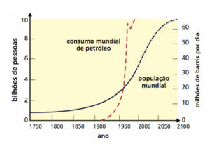

CAPÍTULO 5: INDÚSTRIA PETROLÍFERA
GRÁFICOS E AS FUNÇÕES POLINOMIAIS
Em praticamente todas as atividades em que nos envolvemos e nos produtos que consumimos em nosso dia a dia, há petróleo: no encanamento da casa, nas fibras sintéticas com que são confeccionadas as nossas roupas, nos fertilizantes e defensivos agrícolas, nas embalagens que acondicionem os produtos, nos aparelhos eletrônicos, e eletrodomésticos e tantos outros. É, a partir dos inúmeros derivados do petróleo, que as distâncias ficaram menores, a agricultura  aprimorou sua produção e a Medicina fez muitos avan ços. O petr óleo tem um peso enorme na economia e nas relações desta com a política, em todo o mundo.
Os gráficos nos informam sobre a variedade de produtos derivados do petróleo, o seu consumo, as maiores reservas de petróleo do mundo.
Como a Matemática pode auxiliar a compreender a realidade como os impactos ambientais causados, por exemplo, pela exploração das reservas de petróleo da Terra?
(RE)CONSTRUINDO CONHECIMENTOS
Caro aluno,
Ao longo deste capítulo, explorando tabelas, gráficos, relações, a exploração e a indústria do petróleo, propomos o estudo das funções como relações que têm propriedades especiais.
Ao analisar a tabela e os gráficos apresentados, verificamos que obtemos muitas informações sobre a indústria petrolífera e sua matéria prima, o petróleo.
Observando os gráficos podemos reconhecer que há diferentes tipos e que cada um deles é utilizado para fornecer um tipo especial de informação.
Observe com atenção que há gráficos de barras simples e duplas, horizontais e verticais, e que os gráficos de barra apresentados acima informaram sobre o consumo de derivados do petróleo, as principais reservas de petróleo...
Os gráficos de setor, também chamados gráficos de pizza, nos informaram sobre as estruturas de consumo de petróleo, em geral, apresentam um todo e os setores ou fatias da pizza apresentam percentagens do todo.
Há gráficos de linha como os que nos informaram sobre o consumo mundial de petróleo e que indicam o crescimento ou decrescimento de uma informação ou de um fenômeno.
Em todos os gráficos, verificamos que há dois conjuntos de grandezas envolvidas representadas por dois conjuntos que se relacionam e tratam de relações entre seus elementos.
| As Funções | |
|---|---|
| Anos | Milhões de barris/dia |
| 2003 | 1,6 |
| 2004 | 1,5 |
| 2005 | 1,6 |
| 2006 | 1,7 |
| 2007 | 1,7 |
| 2008 | 1,8 |
| 2009 | 1,9 |
| 2010 | 2,1 |
| 2011 | 2,1 |
| 2012 | 2,1 |
| 2013 | 2,1 |
| 2014 | 2,2 |
| 2015 | 2,4 |
| 2016 | 2,5 |
| 2017 | 2,9 |
| 2018 | 3,4 |
| 2019 | 3,8 |
| 2020 | 4,2 |
Vamos analisar gráfico a seguir que mostra a produção brasileira de petróleo de 2003 a 2020. Chamaremos de A o conjunto dos anos de 2003 a 2020 e de B o conjunto das produções de petróleo em milhões de barris. Observe no gráfico que, no eixo horizontal, chamado eixos das abscissas estão colocados os anos de 2003 a 2020 e são os valores de x. No eixo vertical, chamado eixo das ordenadas, estão colocados os valores de y, referentes aos milhões de barris/dia de petróleo produzidos. A partir do gráfico elaboramos a tabela.
A partir da tabela determinamos o conjunto de pares ordenados que chamamos de F e que é uma relação do conjunto de anos no conjunto de barris/dia de petróleo produzidos.
F = {(2003; 1,5), (2004; 1,5), (2005; 1,6), (2006; 1,7), (2007; 1,7), (2008; 1,8), (2009; 1,9), (2010; 2,1), (2011; 2,1), (2012; 2,1), (2013; 2,1), (2014; 2,2), (2015; 2,4), (2016; 2,5), (2017; 2,9), (2018; 3,4), (2019; 3,8), (2020; 4,2)}
Observando cada par ordenado, podemos verificar que, para cada um dos anos de 2003 a 2020, há um único elemento referente à produção de petróleo daquele ano em milhões de barris/dia
Essa é uma relação especial, chamada uma função F de A em B (F: A→B)
Uma função F é uma relação definida de A em B, tal que, para cada elemento do conjunto A, o Conjunto de Partida, existe um e somente um elemento correspondente em B, o Conjunto de Chegada.
O conjunto A chama-se domínio da função e o B de contradomínio da função. Para cada x ∈ A, o elemento y ∈ B chama-se imagem de x pela função f ou o valor assumido pela função f no ponto x ∈ A e o representamos por f(x). Assim, y = f(x). Em resumo, para termos uma função precisamos de três componentes: o domínio, o contra domínio e a lei de correspondência. Uma função pode ser determinada por um conjunto de pares ordenados, por um diagrama de flechas ou por um gráfico. O conjunto de pares que determina uma função f: A → B é o subconjunto G do produto cartesiano A x B formado por todos os pares ordenados (x, y) em que x é elemento de A (domínio da função) e y é um elemento de B (contradomínio da função). Os pares ordenados são calculados a partir da lei da função y = f(x) e o conjunto imagem da função Im(f) é o conjunto dos elementos do conjunto B que são os correspondentes de x nos pares ordenados.
O diagrama de flechas é uma representação do conjunto de pares ordenados da função que, a caca elemento do conjunto A associa um elemento do conjunto B por meio da lei da função.
A cada par (x, y) associamos um ponto no plano cartesiano. O conjunto de todos esses pontos (x, y) será o gráfico de f(x).
O domínio é representado no eixo x (abscissas), e o contradomínio no eixo y (ordenadas).
Uma função definida de A em B relaciona os elementos do conjunto A com os elementos do conjunto B, muitas vezes, considerando uma regra que chamamos lei da função. Nesse caso, relacionamos x ∈ A com y ∈ B através da lei y = f(x).
Dizemos que, na função, os elementos do conjunto A, também chamado domínio da função, relacionam-se com os elementos do conjunto B através da lei y = f(x), de tal forma que cada elemento do conjunto A relaciona-se com um único elemento do conjunto B.
Conhecida a lei de correspondência e o domínio da função (todos os elementos do conjunto A), na sua representação gráfica, a função utiliza o Plano Cartesiano, cada ponto representa um par ordenado, denominado coordenadas do ponto.
Vejamos alguns exemplos de gráficos de Funções Reais.
Exemplo 1:
Seja uma função F definida de Números Reais para Números Reais (f: R → R) cuja lei é y = 2x + 1. Tanto o Conjunto de Partida como o Conjunto de Chegada são os Números Reais.
Uma forma de traçar o gráfico da função é, inicialmente, elaborar uma tabela, tomando alguns Números Reais como valores de x e, através da lei da função, calcular o valor de y, também chamado f(x).
Podemos, a partir da tabela, determinar o conjunto de pares ordenados da função:
F = {(-3; -5), (-2,5; -4), (-1; -1), (0 ; 1) , (+1; +3), ( +1,5; +4), (+2; +5), (+3; +7) , (+3,5; +8)}
 Assinalando num Plano Cartesiano os valores de x (primeiros elementos dos pares ordenados)
no eixo horizontal (eixo das abscissas) e
os valores de y (segundos elementos dos
pares ordenados) no eixo vertical (eixo
das ordenadas), determinamos cada ponto
representado por um par ordenado que
define as coordenadas do ponto. Unindo
os pontos, traçamos a reta que representa
o gráfico. Como uma reta é um conjunto
infinito de pontos, cada ponto da reta é um
para ordenado do produto cartesiano RxR.
Assim, podemos afirmar que todos os
elementos do Conjunto dos Números
Reais representados no eixo das abscissas
têm um e somente um correspondente que pertence ao conjunto dos Números Reais
representados no eixo vertical, chamado eixo das ordenadas.
Assinalando num Plano Cartesiano os valores de x (primeiros elementos dos pares ordenados)
no eixo horizontal (eixo das abscissas) e
os valores de y (segundos elementos dos
pares ordenados) no eixo vertical (eixo
das ordenadas), determinamos cada ponto
representado por um par ordenado que
define as coordenadas do ponto. Unindo
os pontos, traçamos a reta que representa
o gráfico. Como uma reta é um conjunto
infinito de pontos, cada ponto da reta é um
para ordenado do produto cartesiano RxR.
Assim, podemos afirmar que todos os
elementos do Conjunto dos Números
Reais representados no eixo das abscissas
têm um e somente um correspondente que pertence ao conjunto dos Números Reais
representados no eixo vertical, chamado eixo das ordenadas.
Essa Função cujo gráfico é representado por uma reta no Plano Cartesiano é uma função polinomial de primeiro grau.
Vejmos, agora, uma função G também definida de Números Reais em Números Reais (g: R → R), determinada através da lei g(x) = 2x2:
Tomemos Números Reais como valores de x e, através da lei da função, vamos calcular o valor de y,no caso g(x), e vamos construir uma tabela.
A partir dos dados da tabela, determinamos o conjunto de pares ordenados da função:
G = {(-1 , +2) , (-2 , +8) , (0 , 0) , (+1 , +2) , (+2 , +8)}
A seguir, gora, representamos os pares ordenados no plano cartesiano e ligamos os pontos.
Essa função cujo gráfico é uma curva, é uma Função Polinomial de segundo grau, também chamada Função quadrática e o seu gráfico é uma parábola.
Comparando os gráficos e as leis das duas funções, observamos que o gráfico do primeiro exemplo é uma reta cuja lei y = 2x + 1 é uma expressão analítica determinada por polinômio de primeiro grau e que o segundo exemplo é uma curva determinada por polinômio de segundo grau cuja lei é y = 2x2.
PRATICANDO... AÇÃO E REFLEXÃO
1) Dados os conjuntos A = {0, -1, 1, -3, 3} e B = {0, 3, 27, -3, -9, 1}, quais das relações seguintes são funções de A em B? Justifique:
2) Complete os diagramas de flechas para cada relação e identifique aquelas que são funções. O conjunto A = {-1, 0, 1, 2} e B = {-1, 0, 1, 2, 3, 5, 8}.

3) Uma função f de A= em B =  é definida pela seguinte
lei: f(x) = x - 1
é definida pela seguinte
lei: f(x) = x - 1
a) Represente f em um diagrama de fechas.
b) Faça o gráfico de f.
c) Determine o domínio, o contradomínio e a imagem da função observando o diagrama
O QUE APRENDI
No contexto da Indústria Petrolífera, estudamos os diferentes tipos de gráficos para entender que sua leitura e interpretação nos auxiliam a compreender, por exemplo, os impactos ambientais. A partir dos gráficos, construímos a ideia de função e de Funções Reais, representadas no Plano Cartesiano. Exploramos as funções polinomiais de 1º e 2º graus, seus gráficos e suas características (domínio, imagem, gráfico, sinais), compreendendo-as como modelos que nos permitem compreender fenômenos.
Respostas dos Exercícios da seção: Praticando... Ação e Reflexão
1a) R: é função pois todos elementos de A possuem correspondentes em B
1b) R: não é função pois o -1 não tem correspondente.
1c) R: é função.
1d)R: não é função.
2a) R: é função.
2b) R: é função
3a)

3c) R: Domínio:{-1, 0, 1, 2, 3, 4, 5, 6}, contradomínio: {-3, -2, -1, 0, 1, 2, 3, 4, 5, 6}, imagem:{ -2, -1, 0, 1, 2, 3, 4, 5}